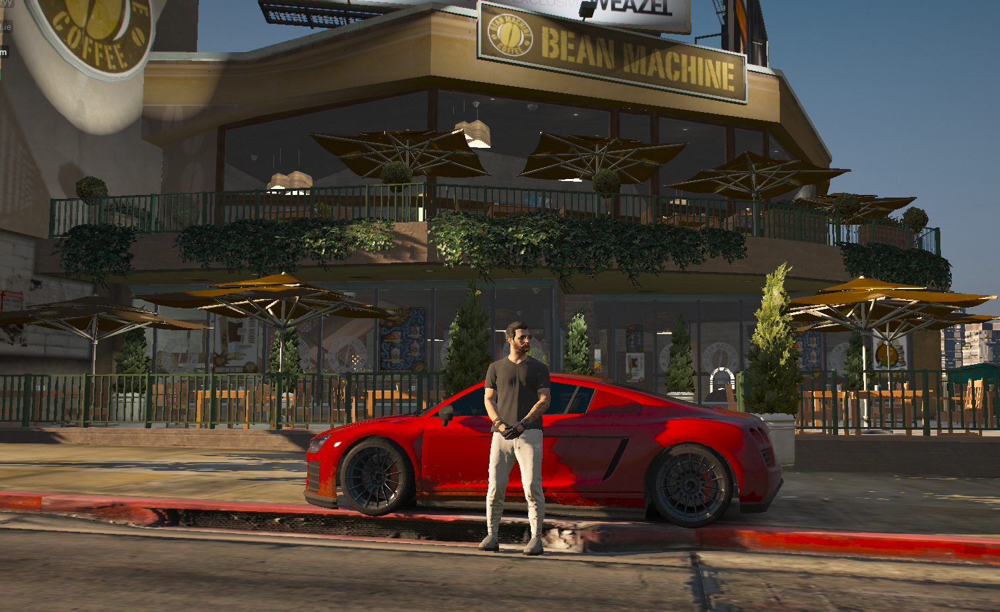
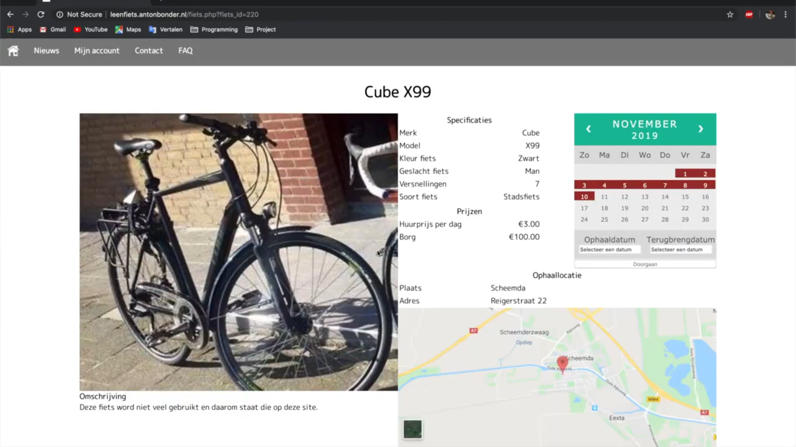
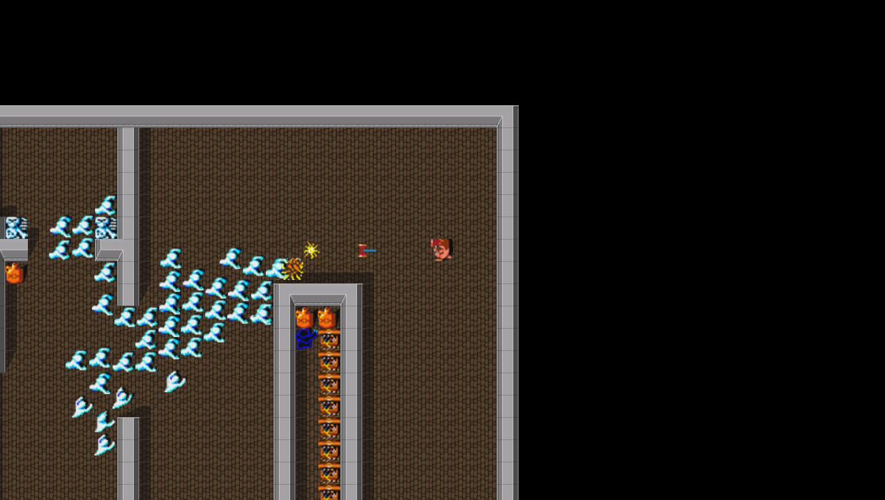
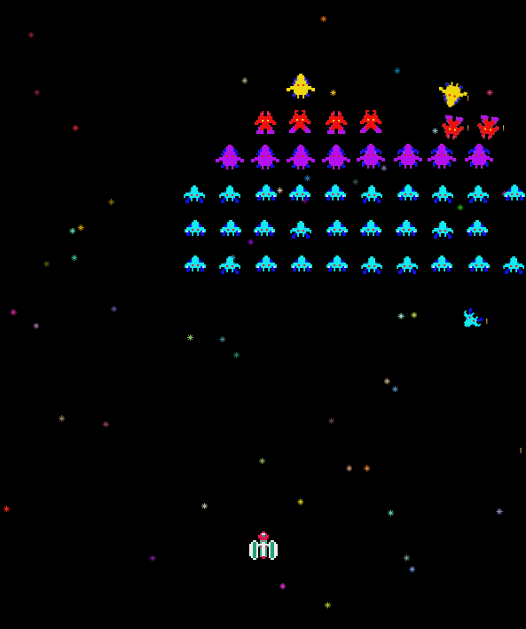
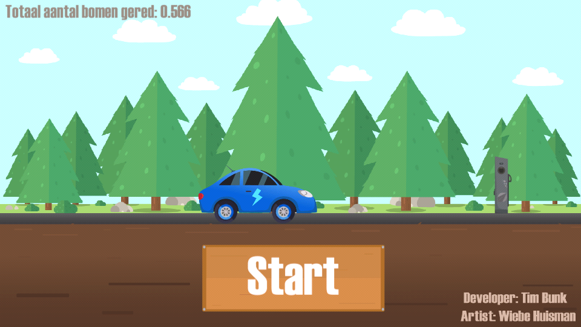
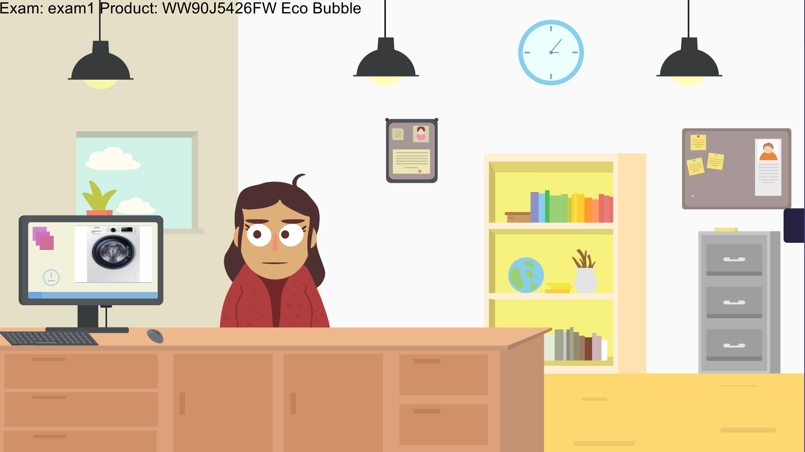
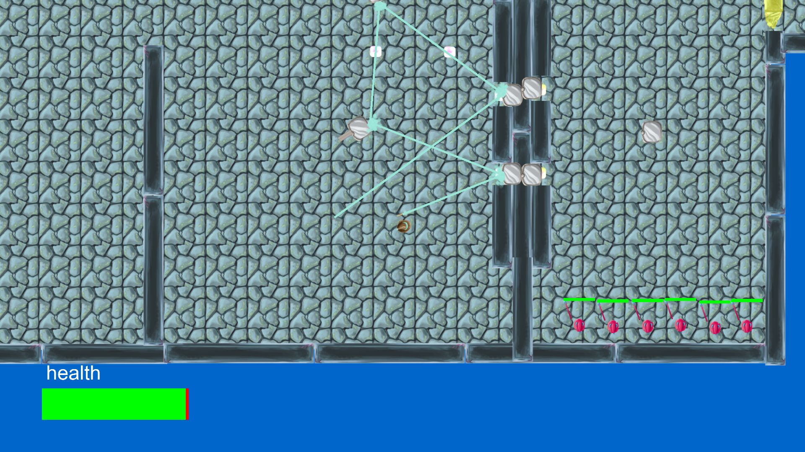
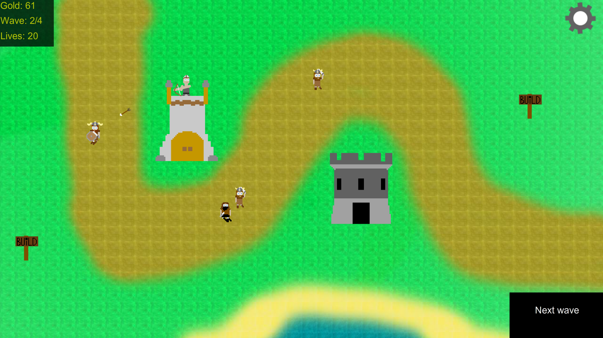

Here you can find a combination of my spare time projects and school projects.
Ocean Drive V2
Ocean Drive V2 is a Fivem roleplay server that is being developed by a that team exists out of a variety amount of talented people.
FiveM is a modification for Grand Theft Auto V enabling you to play and create customized multiplayer servers.
The things that will make our server stand out among the other servers is that almost all of the scripts will be custom made. This will give us full control on what is happening, easily extend, deploy new features on the fly and maintain the server more easily which is really important to us. Also the community matters a lot to us because with out them we would not be doing this. We listen closely to our community and develop scripts based on their needs.
Our goal is to become the biggest roleplaying server among the Fivem community. We know this is a very ambitious goal but I believe it is possible due to our talented team.
Ocean Drive V2 will be released somewhere in 2021 to the public. Date: 2020 & present
FiveM is a modification for Grand Theft Auto V enabling you to play and create customized multiplayer servers.
The things that will make our server stand out among the other servers is that almost all of the scripts will be custom made. This will give us full control on what is happening, easily extend, deploy new features on the fly and maintain the server more easily which is really important to us. Also the community matters a lot to us because with out them we would not be doing this. We listen closely to our community and develop scripts based on their needs.
Our goal is to become the biggest roleplaying server among the Fivem community. We know this is a very ambitious goal but I believe it is possible due to our talented team.
Ocean Drive V2 will be released somewhere in 2021 to the public. Date: 2020 & present

Leenfiets website
Leenfiets is a fake company that me and some schoolmates made up. Leenfiets is Dutch for borrow bike and as the name suggests you can borrow bikes from private individuals through the website that we made.
The main focus of this project was to learn the basics of php, databases and learn how to work in a team using scrum.
Even though it is not the prettiest website I am very happy to show the result because the website contains all the functionality for the whole borrowing process to work and more.
Date: 2019
The main focus of this project was to learn the basics of php, databases and learn how to work in a team using scrum.
Even though it is not the prettiest website I am very happy to show the result because the website contains all the functionality for the whole borrowing process to work and more.
Date: 2019

Ray tracing
The picture you see to the right is a image made by a ray tracer that I made for a school project. The image is created using only the CPU.
The goal of this project was to learn about graphics, intersections, math, vectors and matrices.
For me this was quite the challenge as the project was mostly all about math and I am not that experienced in math. I already knew how to work with vectors and matrices but I had to program my own math library which I managed to do. I used unit testing to test if my math library was giving me correct result.
Date: 2019
The goal of this project was to learn about graphics, intersections, math, vectors and matrices.
For me this was quite the challenge as the project was mostly all about math and I am not that experienced in math. I already knew how to work with vectors and matrices but I had to program my own math library which I managed to do. I used unit testing to test if my math library was giving me correct result.
Date: 2019

Gauntlet
Gauntlet is a tile based retro game that I recreated for a school project.
School provided me with a basic c++ framework which was pretty slow (they made it slow on purpose) so I optimized it. Then all I had to do was create the game. I used a tool called Tiled to create levels and I load the levels using my own interpreter.
All of the sprites are inside of a spritesheet and are rendered effeciently using a technique called instancing. Collisions are being checked based on the tiles around you.
Date: 2018
School provided me with a basic c++ framework which was pretty slow (they made it slow on purpose) so I optimized it. Then all I had to do was create the game. I used a tool called Tiled to create levels and I load the levels using my own interpreter.
All of the sprites are inside of a spritesheet and are rendered effeciently using a technique called instancing. Collisions are being checked based on the tiles around you.
Date: 2018

Galaxians
Galaxians is a retro game that I recreated for a school project.
The challenge of this project was to have the AI behave as much like orignal game as possible.
Each AI behaves differently. They all have a unique movement and also start moving differently once some of their allies go down. For example they will move with more at the same time or group together and attack.
Date: 2018
The challenge of this project was to have the AI behave as much like orignal game as possible.
Each AI behaves differently. They all have a unique movement and also start moving differently once some of their allies go down. For example they will move with more at the same time or group together and attack.
Date: 2018

Electric vehicle game
Electric vehicle game is a Dutch game that I made together with a artist from my school during my internship at Capteur. A lot of people at Capteur drive electric and thats were the idea of this game came from.
The purpose of the game is to simulate a average electric vehicle in different weather situation to show the performance of the battery but more important is that driving electric is better for the enviroment. This game shows how much better it is for the enviroment when compared to a diesel car.
The game is made in Unity using c# and the game can be played on both Android and IOS phones.
Date: 2018
The purpose of the game is to simulate a average electric vehicle in different weather situation to show the performance of the battery but more important is that driving electric is better for the enviroment. This game shows how much better it is for the enviroment when compared to a diesel car.
The game is made in Unity using c# and the game can be played on both Android and IOS phones.
Date: 2018

Training Sales Person Application
Training Sales Person Application is a Dutch application that I made together with an artist from my school during my internship at Capteur.
The application was made to learn sales associates about their products and how to respond to question from customers about those products.
The application is created in Unity using c#. We also made use of Azures cognitive services to make the AI (customer) as smart as possible and have the conversation with the customer feel more real.
Date: 2018
The application was made to learn sales associates about their products and how to respond to question from customers about those products.
The application is created in Unity using c#. We also made use of Azures cognitive services to make the AI (customer) as smart as possible and have the conversation with the customer feel more real.
Date: 2018

Staff of the Chaos Temple
Staff of the Chaos Temple is game that I made as a intake assignment for the BUAS/NHTV. As intake assignment you had to program a game using c++/opengl.
The main subject of the game had to be about reflection. So I came up with this puzzle/action game where you have to fight enemies and light up crystals to open doors.
You have crystals in a room that can be activated using your staff that shoots a laser. If you activate all of the crystals at the same time with your staff a door will open that is connected to those crystals. You can use the mirrors to have the laser from your staff reflect allowing you to hit multiple crystals at the same time.
Levels can be created using the level creator that I made as well.
Date: 2018
The main subject of the game had to be about reflection. So I came up with this puzzle/action game where you have to fight enemies and light up crystals to open doors.
You have crystals in a room that can be activated using your staff that shoots a laser. If you activate all of the crystals at the same time with your staff a door will open that is connected to those crystals. You can use the mirrors to have the laser from your staff reflect allowing you to hit multiple crystals at the same time.
Levels can be created using the level creator that I made as well.
Date: 2018

The Restless Tombs
The Restless Tombs is a game that I made because I wanted to learn about OpenGL, game-engines/frameworks and too get better at c++.
The focus of this project was to learn how to render things using OpenGL. To learn this I used learnopengl.com as my main source. I also picked up a book called 'game engine architecture second edition' and watched videos from TheCherno on youtube. With all this learning material I was able to create my own 2D game framework using c++ and OpenGl.
Date: 2017
The focus of this project was to learn how to render things using OpenGL. To learn this I used learnopengl.com as my main source. I also picked up a book called 'game engine architecture second edition' and watched videos from TheCherno on youtube. With all this learning material I was able to create my own 2D game framework using c++ and OpenGl.
Date: 2017

Vikings Rush
Vikings Rush is one of my first games that I have ever made. It was made using AS3/flash which is pretty outdated now.
I made this game for a school project. The project was about OOP and vector math. This was also my first time that I had to program with OOP and vectors. But doing this project taught me all the basic about programming, OOP and vector math.
The game is a tower defence game so you have to place towers and those towers will try to stop the enemies from passing by, by shooting at them. In the final wave of enemies a boss will appear.
Date: 2016
I made this game for a school project. The project was about OOP and vector math. This was also my first time that I had to program with OOP and vectors. But doing this project taught me all the basic about programming, OOP and vector math.
The game is a tower defence game so you have to place towers and those towers will try to stop the enemies from passing by, by shooting at them. In the final wave of enemies a boss will appear.
Date: 2016
